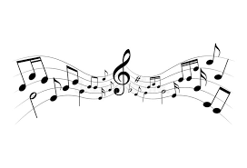
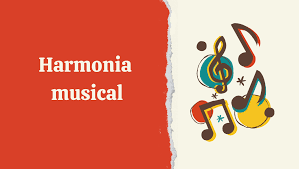

Três pilares para compor uma Música
A teoria musical nos permite identificar três grandes pilares, três elementos, presentes nas mais diversas manifestações musicais existentes; a saber:
-
Melodia
A melodia é uma sequência linear de notas que o ouvinte ouve como uma entidade única. A melodia de uma música é o primeiro plano para os elementos de apoio e é uma combinação de tom e ritmo.
-
Harmonia
Harmonia é um conceito sobre concordância e boa disposição de objetos ou sons, tornando-os agradáveis aos olhos ou ouvidos. O conceito de harmonia é utilizado em várias áreas, especialmente nas artes e na arquitetura.
-
Ritmo
O ritmo é considerado como a ordenação do movimento e a alternação e proporção de valores de tempo entre as partes de um todo. O ritmo está ligado à música, mas também a outras formas de arte, como a poesia, por exemplo.
Top 3 melhores estúdios de música
| Abbey Road Studios | Londres |
| Air Studios | Londres |
| Dark Horse Recording | Tennessee |